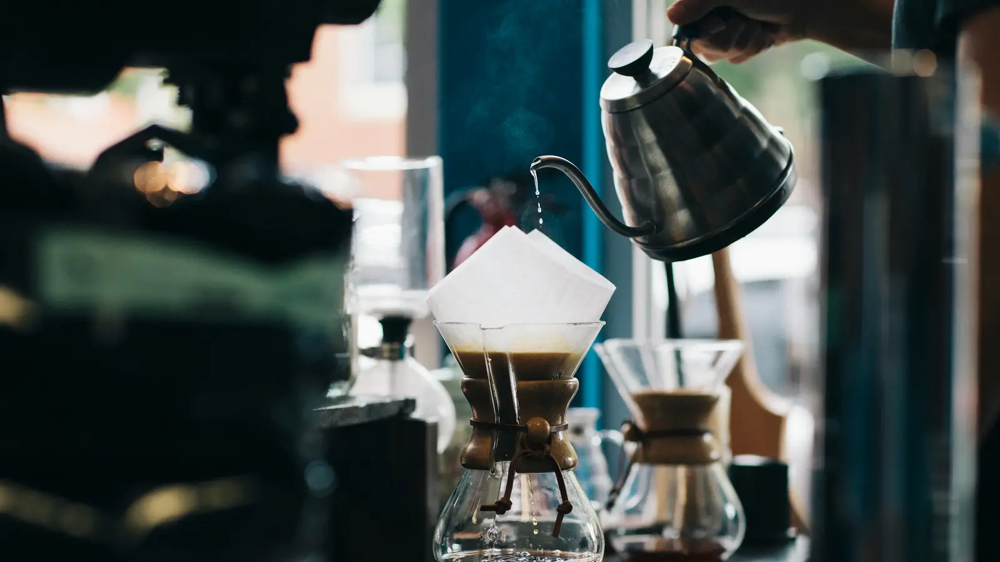
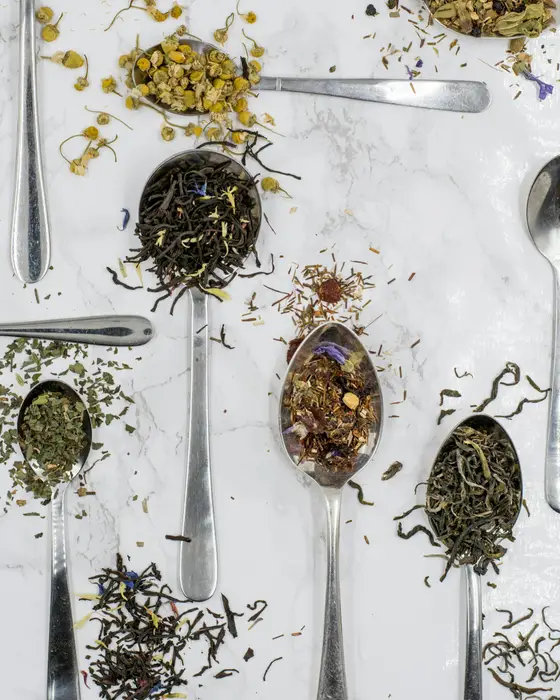
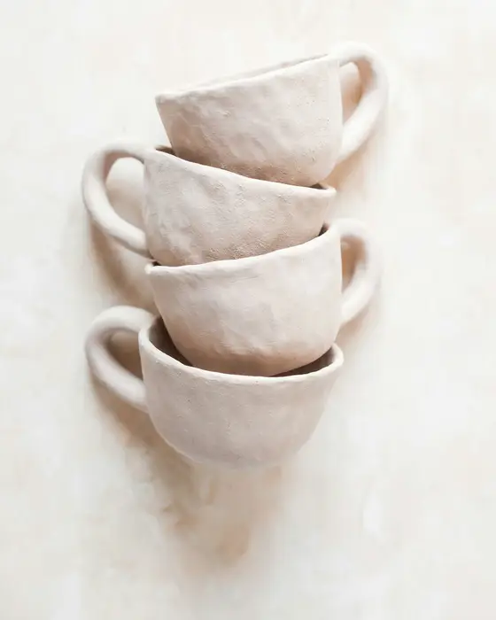
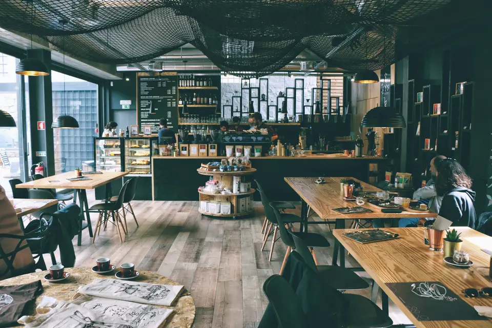
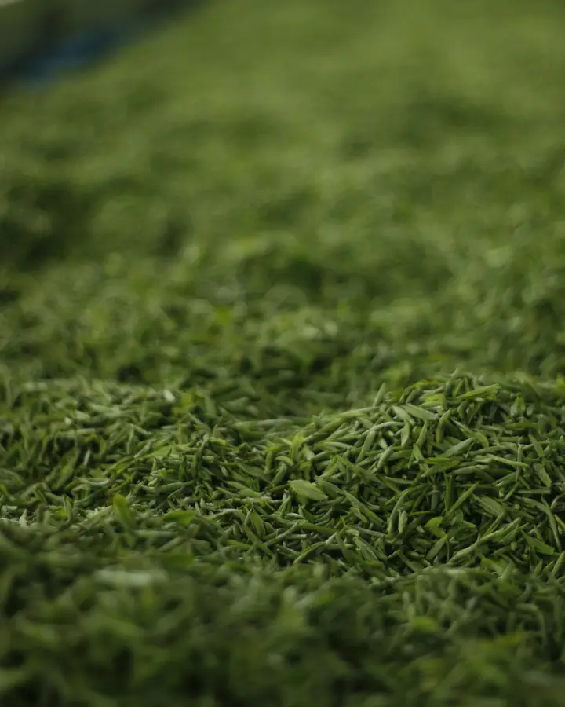
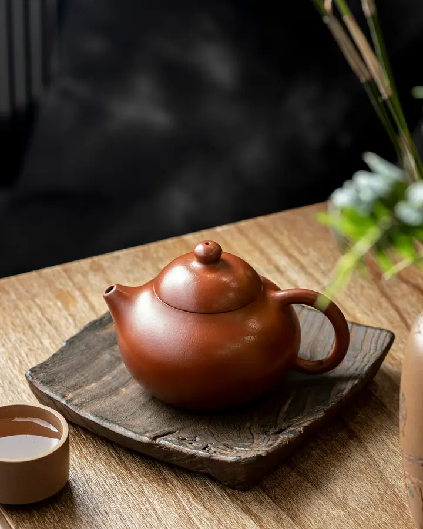

Nouvelle récolte : Éthiopie, Guji
Du café torréfié à Lyon, du thé en feuilles et de la vaisselle faite à la main
Nous torréfions en petites séries chaque semaine et nous choisissons la vaisselle auprès d'ateliers que nous avons visités. Les commandes partent sous 48 heures.
- Livraison offerte dès 49 €Colissimo ou point relais, 2 à 4 jours
- Torréfié chaque semaineLa date figure sur chaque paquet
- Retours sous 30 joursPour la vaisselle et le linge, frais à notre charge
- Paiement sécuriséCarte bancaire, PayPal ou virement
 CaféGrains torréfiés chaque semaine, moulu, matériel de filtre
CaféGrains torréfiés chaque semaine, moulu, matériel de filtre
ThéThés en feuilles, coffrets de découverte, théières
CéramiqueTasses, mugs et théières en grès et en porcelaine MaisonBougies de cire de soja, linge de table en lin
MaisonBougies de cire de soja, linge de table en linLa boutique
6 912 références en stock, prix médian 19,60 €



Une arrière-boutique à Lyon, un torréfacteur de 5 kilos
Maison Brume a commencé en 2016 dans une arrière-boutique de la Croix-Rousse, avec un petit torréfacteur et une étagère de tasses. Camille torréfiait le matin, Théo emballait l'après-midi. Les premiers clients étaient les voisins.
Dix ans plus tard, l'atelier compte six personnes et le torréfacteur est un peu plus grand. Nous achetons le café vert à deux importateurs qui nous envoient la fiche de chaque lot, et nous le torréfions chaque semaine, en lots de quelques dizaines de kilos au plus.
La vaisselle suit la même règle. Nous allons voir les ateliers, nous gardons ceux dont les tasses tiennent bien en main après un an d'usage, et nous arrêtons celles qui s'ébrèchent. Le linge de lin vient d'une petite filature du Nord.
- 6 personnesà l'atelier de Lyon
- Chaque semaineune torréfaction, une expédition
- 30 jourspour changer d'avis sur la vaisselle
Ce que disent nos clients
★★★★★ 4,7 sur 5, 2 530 avis vérifiésChaque tasse a sa personnalité
Elles ne sont pas identiques, et c'est ce que je voulais. Elles tiennent bien en main et s'empilent facilement.
Un café qui sent la pêche
Je l'ai préparé en V60 : c'est clair, fruité, sans amertume. Le paquet est arrivé deux jours après la commande, torréfié de la veille.
Le figuier est très réussi
Le parfum est présent sans être lourd. Elle brûle proprement et le verre se garde.
Le journal
Trois conseils de l’atelier
Quelle mouture pour quelle méthode
Fine pour l'espresso, moyenne pour le filtre, grosse pour la cafetière à piston. Un seul réglage change le goût plus qu'un changement de grain.
4 min de lecture
Infuser un thé vert sans amertume
Une eau à 70 °C, une minute d'infusion, des feuilles bien étalées. Nous expliquons pourquoi la température compte plus que la durée.
3 min de lecture
Entretenir une théière en grès
Pas de produit vaisselle, de l'eau chaude et un séchage à l'air. La terre garde le goût de ce que l'on y prépare : choisissez un thé par théière.
3 min de lectureUn e-mail par mois, pas plus
Les arrivages de café, une recette de saison et les dates des prochaines torréfactions. 10 % de réduction sur votre première commande.